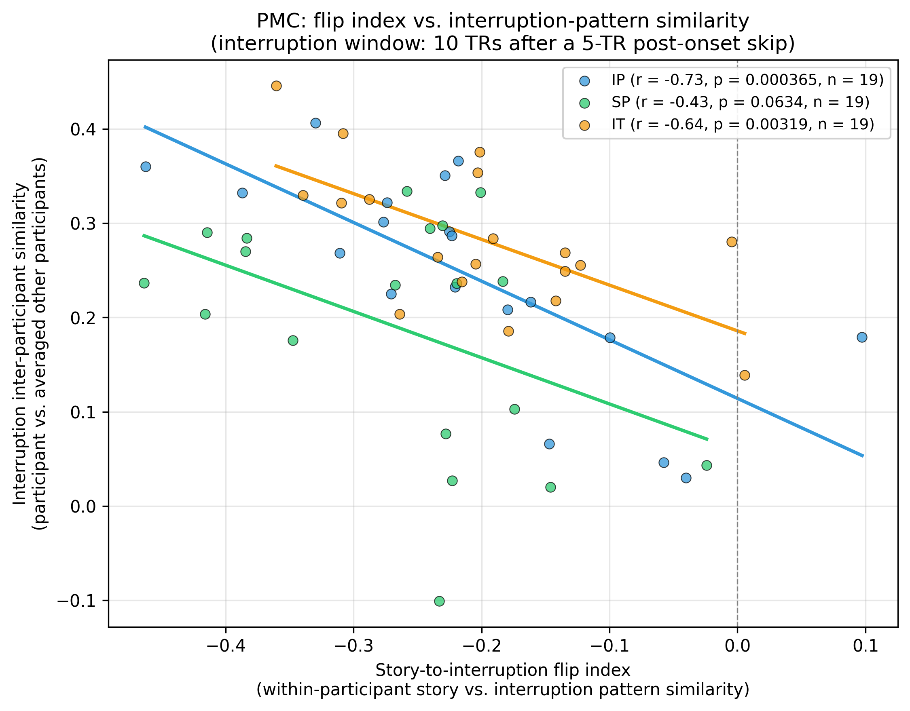

We tested whether participants whose posterior medial cortex (PMC) pattern shows a stronger story-to-interruption inversion also show greater inter-subject pattern similarity during interruptions. The analysis uses the same template-MVP similarity engine as Result 3.1 (the primary inversion test): for every interruption epoch the TRs within a window are first averaged into a single template multivoxel pattern, and Pearson correlations are computed between two such templates. PMC voxels were defined by the project's anatomical PMC mask, and per-voxel timecourses were z-scored across the entire run prior to analysis.
For every epoch, the analysis used two adjacent fifteen-second windows in PMC: a story window covering the ten TRs immediately before interruption onset ([onset − 10, onset), no pre-onset skip), and an interruption window covering the ten TRs that began seven and a half seconds after onset ([onset + 5, onset + 15), clipped at the epoch offset), with the first five TRs from onset discarded to avoid hemodynamic carry-over from the preceding story segment. Two quantities were computed per participant.
The story-to-interruption flip index is the within-participant pattern similarity between that participant's own story window and their own interruption window: for each epoch the participant's story-window TRs were averaged into a single template pattern, their interruption-window TRs were averaged into a second template pattern, and one Pearson correlation was computed between the two templates; the flip index is the mean of those per-epoch correlations across the participant's epochs. A more negative value indicates a stronger inversion from story to interruption.
The interruption inter-subject similarity is the participant's own interruption-window template correlated against the average of the other participants' epoch-matched interruption-window templates (leave-one-out): for each epoch we computed each participant's own interruption-window template, took the across-other-participant mean of those templates, and computed one Pearson correlation between the participant's template and the others-mean template; the interruption similarity is the mean of those per-epoch correlations.
Within each condition (intact-pause, IP; scrambled-pause, SP; intact-theory-of-mind, IT) the flip index was correlated across participants with the interruption inter-subject similarity using Pearson correlation (two-sided p). A 95% confidence interval for the correlation was obtained by resampling participants with replacement (10000 iterations). The slope of the least-squares line is also reported in the table and drawn per condition in the scatter plot.
| Condition | n | Mean flip index | Mean interruption similarity | Pearson r | 95% CI (bootstrap) | p | Slope |
|---|---|---|---|---|---|---|---|
| IP | 19 | -0.2114 | 0.2456 | -0.732 | [-0.894, -0.588] | 3.65e-04 | -0.622 |
| SP | 19 | -0.2652 | 0.1893 | -0.434 | [-0.686, -0.116] | 0.0634 | -0.491 |
| IT | 19 | -0.2017 | 0.2836 | -0.640 | [-0.866, -0.272] | 0.0032 | -0.485 |

Each dot is one participant. The x-axis is the within-participant story-to-interruption flip index (more negative means a stronger inversion); the y-axis is the participant's interruption pattern similarity to the averaged other participants. Lines are the per-condition least-squares fits. Condition codes: intact-pause (IP), scrambled-pause (SP), intact-theory-of-mind (IT).